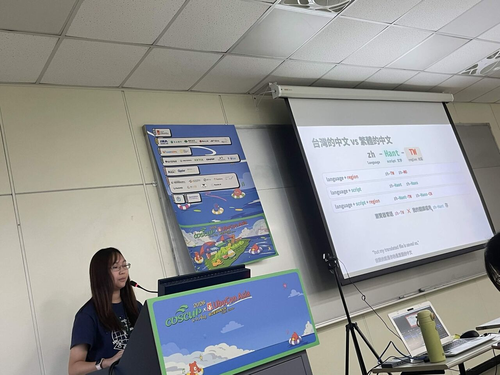
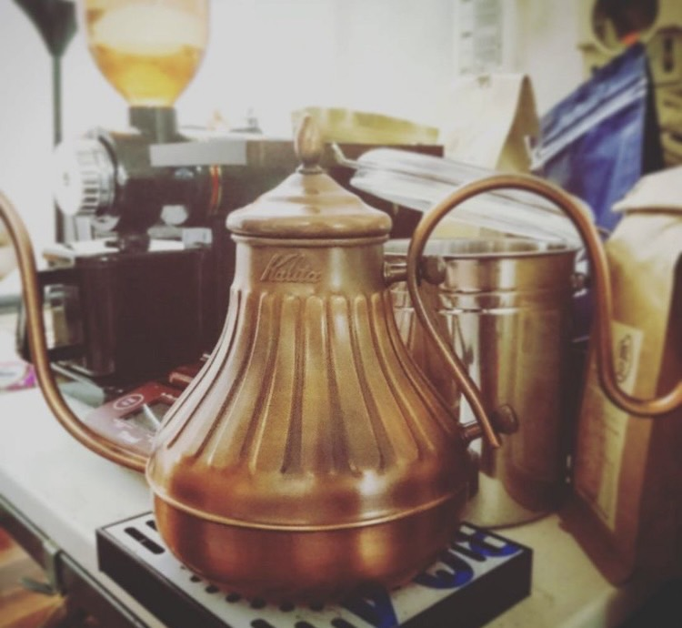
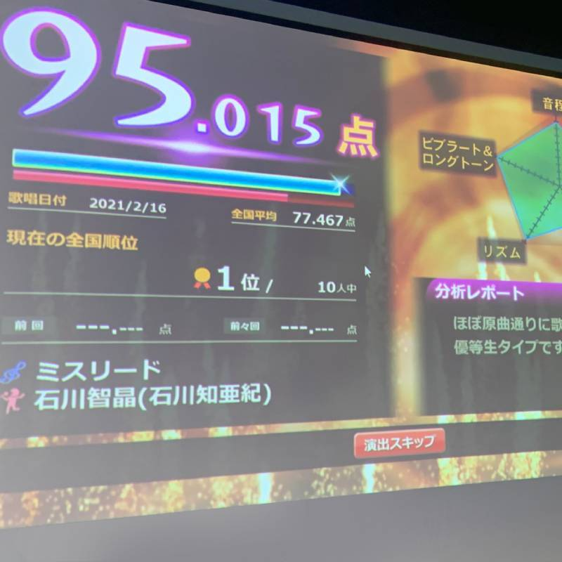
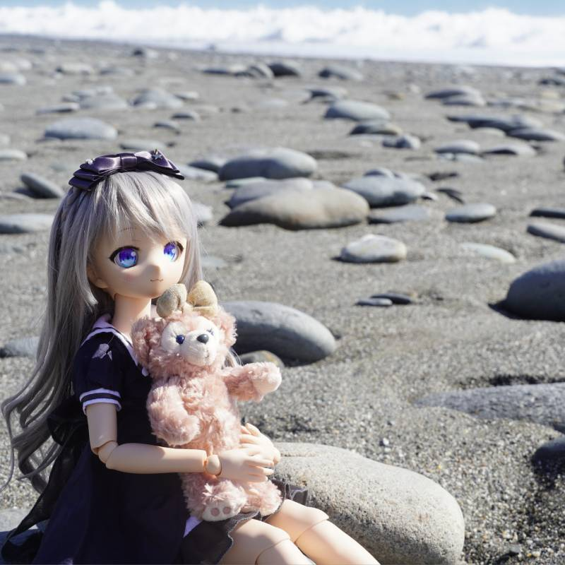
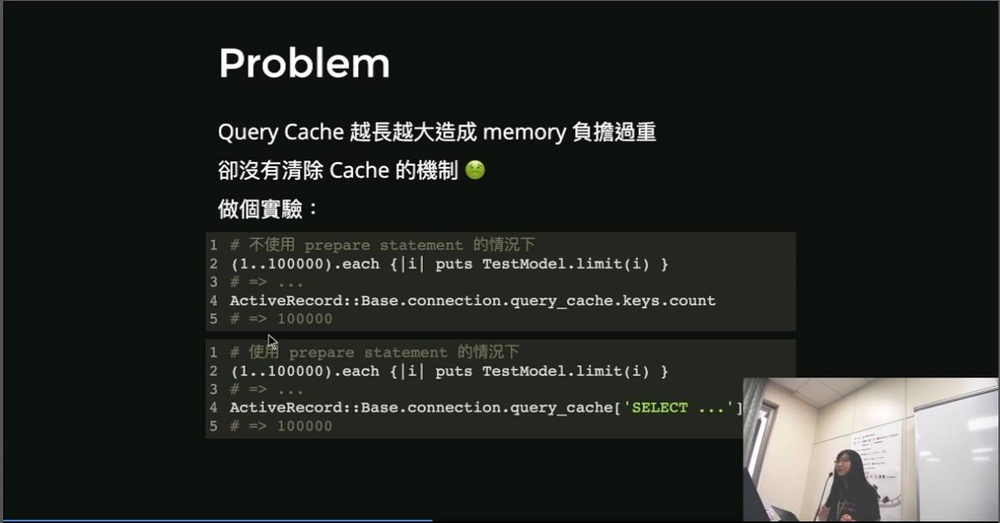
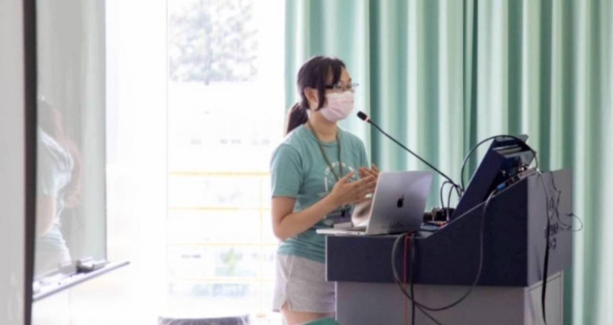
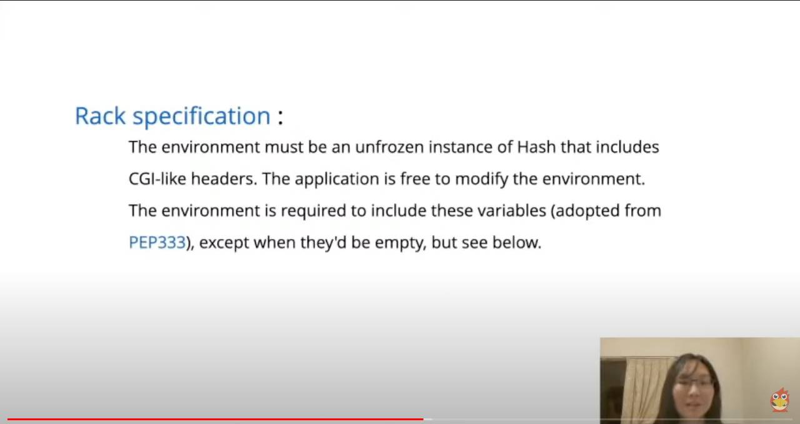
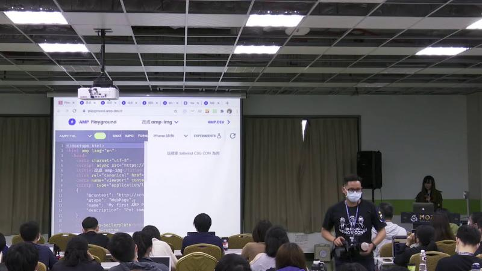
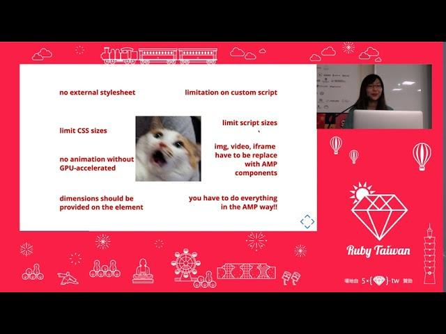

Fumitsuki
COFFEE, CODE & LITTLE JOYS
後端工程師 · Ruby · PicCollage
喜歡唱日卡、吃甜食、喝手沖咖啡
一年三百六十五天隨時都歡迎拍打餵食。
Latest talk
近期的分享
Little joys
關於我


淺焙咖啡
從超商咖啡、濾掛式喝到因緣際會開啟了手沖的愛好。其中特別喜歡淺焙咖啡，沒有焦化碳化的咖啡保留了近似鮮花、水果的酸甜和香氣，有機會嘗到茉莉花、草莓、蜂蜜、茶葉...各種生活美食的風味。覺得手沖是各種萃取方式中，入門器材不會太貴，又有很大的變化和操作空間的一種，作為一種小小的休閒，修身養性、自在放鬆 💆🏻♀️


唱日 K
興趣之一是聽日文歌，喜歡有點古典抒情的 KOKIA，也喜愛既可愛又不按牌理出牌的相対性理論。覺得這世上最神的作曲家是梶浦由記，最厲害的歌唱才女是石川智晶，最棒的音樂團體是 See-Saw 和 Kalafina！
定期會找朋友去日 K 唱歌。比較擅長 Kalafina 和 FictionJunction 的曲子。


帶著 MDD 看世界
ドルフィードリーム(Dollfie Dream，簡稱 DD)是日本 Volks 公司推出的娃娃品牌，有著動漫感的萌萌臉蛋和全身可動素體。其中 Mini Dollfie Dream （簡稱 MDD）是 DD 當中身形比較嬌小的尺寸。
這幾年接連養了幾隻 MDD，喜歡帶著他們一起遊山玩水、四處拍照。有了 MDD 女兒們的日常，讓小肥宅我的生活充滿了莫名的幸福感✨
Experience
經歷
全職工作
Cardinal Blue Software, Inc.
Backend Developer
– 至今
商線科技股份有限公司
Backend Developer
–
大聲公行動股份有限公司
Backend Developer
–
五倍紅寶石股份有限公司
Rails Developer
–
實習與兼職
台灣大學圖書資訊學系第十二研究室
研究助理兼職
–
使用 Python 與其下套件 Selenium、Pandas 來抓取資料，進行做數據分析。例如期刊領域之間的引用關係、文章間的共被引關係等。
信鍀資訊股份有限公司
雲端系統後端開發兼職
–
五倍紅寶石股份有限公司
暑期實習生
–
五倍紅寶石股份有限公司
上半年技術實習生
–
學歷
台灣大學圖書資訊學系
學士班學生
–
Talk archive
社群參與
喜歡認識新朋友，也把握分享自己的機會。

COSCUP 2023
Rails ORM 踩坑經驗談
Rails ORM 的常見陷阱與查詢行為，以及 query cache、prepared statement 可能帶來的意外。


COSCUP × RubyConfTW 2021
用 Python 來執行 Ruby 的我，與撿到的 Puma 和 Rack
用 Python 執行 Ruby CGI script，從實作理解 Rails、Rack 與 Puma 如何串在一起。

MOPCON 2020
想在 AMP 網頁上做華麗麗效果的我是否搞錯了什麼
分享在 AMP 網站開發互動功能時遇到的限制、挑戰與解決方式。

COSCUP 2020
老闆叫我在 Rails App 裡實作 AMP，我該離職嗎？
從工作實戰出發，分享為 Rails 網站建立 AMP 版本的經驗與取捨。